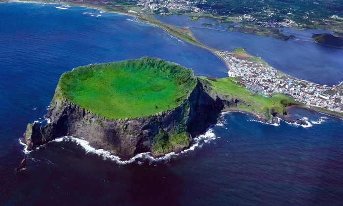

Jeju Island, South Korea’s most popular holiday destination, is known for its natural beauty, beaches, waterfalls, and scenic hiking trails.
Top Things to Do in Jeju Island:
-
 Hike Hallasan Mountain
Hike Hallasan Mountain
Hallasan Mountain is the highest peak in South Korea, standing at 1,947 meters. The hike to the summit is challenging yet rewarding, offering breathtaking views of the surrounding landscapes. The trail is lined with beautiful flora, including rare species of plants and wildflowers that bloom in spring. As you ascend, you'll encounter diverse ecosystems and might even see some local wildlife. Reaching the top provides a sense of accomplishment, and on a clear day, you can see the entire island from the summit. -

Visit Seongsan Ilchulbong
Seongsan Ilchulbong, also known as Sunrise Peak, is a UNESCO World Heritage site that features a stunning volcanic crater. Formed over 5,000 years ago, this natural wonder is a popular spot for watching the sunrise. The hike to the top is relatively easy and takes about 30 minutes, making it accessible for all ages. Once at the top, you will be rewarded with panoramic views of the coastline and the surrounding area, making it a perfect spot for photography enthusiasts. -
 Relax on Jeju’s Beaches
Relax on Jeju’s Beaches
Jeju Island is home to some of the most beautiful beaches in South Korea. Hamdeok Beach and Hyeopjae Beach are renowned for their pristine sands and clear turquoise waters. These beaches are perfect for sunbathing, swimming, or enjoying water sports such as snorkeling and paddleboarding. The scenic views of the ocean and the nearby volcanic rock formations make these beaches a must-visit for anyone looking to relax and unwind. -
 Explore Jeju’s Waterfalls
Explore Jeju’s Waterfalls
Jeju Island boasts several breathtaking waterfalls, with Cheonjiyeon and Jeongbang Falls being two of the most famous. Cheonjiyeon Falls is a picturesque waterfall surrounded by lush greenery and is a popular spot for a peaceful stroll. Jeongbang Falls, on the other hand, is unique as it is one of the few waterfalls in Asia that falls directly into the ocean. The sound of cascading water and the beautiful natural surroundings create a serene atmosphere, making it an ideal location for relaxation and reflection.